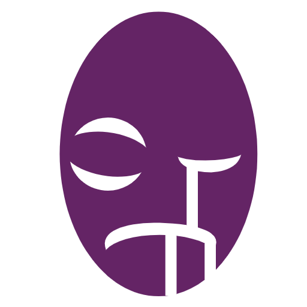
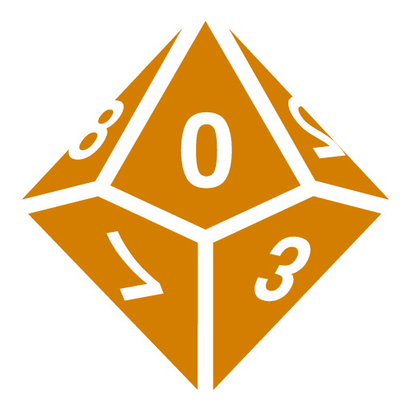

Hollow
Hollows are revenants of people who suffered an unworthy or untimely death and who's job as a mortal is not finished.
Like a ghost, a Hollow's pursuit is so strong that their soul refused to leave the mortal plane, and has come back into their own body to finish what they started.
A hollow is an undead, yet not considered necessarily unholy.
As a Hollow, you might have been revived by the god you follow, or simply your feeling of purpose was so strong that your soul did not leave your body when you died.
A Hollow always has a goal, usually started when they were alive.
Or, you might have gotten your goal when you died, such as exacting revenge on the person who killed you.
Most of the time, hollows are devoid of emotions.
Many common emotions they used to have are now numbed.
They might retain emotions they particularily had when they were alive, such as love (if, for example, they had someone they loved very much)
The primary emotion they feel is the one that drives them to their goal.
In following their goal, a Hollow might be unusually hopeful or perseverent.
The worst emotions a hollow can feel are uselessness and hopelessness.
Sometimes, being hollow comes with partial amnesia.
A Hollow might forget certain aspects of their past life, such as forgetting some skills or who some people were, where they lived, sometimes even what their name is, in which case a Hollow will come up with a name to represent them, based on what they know.
After achieving their goal, a hollow usually feels complete, unless another goal arises.
Then, it's the Hollow's choice what it wants to do - roam until their body becomes too rotten to continue and finally release their soul, or kill themselves, as their life's purpose was fulfilled.
 Character Setup
Character Setup
 Stats and Saves
Stats and Saves
Choose 2 of the following stats and increase them by 1...
- Charisma
- Intelligence
- Wisdom
Or choose 1 of these and increase it by 1:
- Fortitude
- Dexterity
As a Hollow, you have the following:
- +1 Wisdom
- +1 Fortitude
You also have:
- -1 Athletics
- -1 Luck
- -1 Nature
- -1 Persuasion
- -1 Animal Handling
Your Speed is 6 meters meters.
Your starting  Health is 8.
Health is 8.
Other Things
People of your kind live for 1 to 20 years as a Hollow and their size is The size of your past life race
Choose which race you were prior to your death.
This is only for aesthetics and storytelling purposes.
Starting Abilities
Undeath (Passive)
You have Advantage to rolls against Diseases.
You have 50% vulnerability to Fire damage and to attacks done with silver weapons.
You do not require food to survive, but you do require 8 hours of sleep per day, water and air.
You are considered Undead.
Valiant (Passive)
 Long Rest
Long Rest
When you drop to 0 Health, you can still take your next turn without penalty.
After your next turn, you fall unconscious.
You also fall unconscious in that time if you take damage again.
Talents
At Level 2, choose one of the following abilities and gain it permanently:
Darkvision (Passive)
You can see up to 12 meters away in darkness, without discerning colors.
Sense Souls (0 Actions)
 Long Rest
Long Rest
You know the locations of any living creatures within 15 meters that are not obstructed by thick materials.
The more obstructed the space between you and living creatures is, the fainter you feel it. 1 meter of obstruction completely hides the creatures.
Beating Heart (Passive)
You slow down the decaying of your body and increase your life span by up to 100 years.
You can stay unconscious for up to 1 week before dying.
Your maximum health also increases by 3.